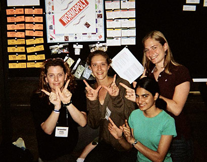
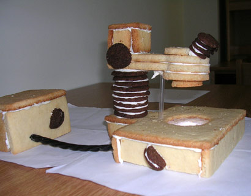

News Archives : 2007 : State of the Art
by Jacqueline Brooks, Andrew McMahon and Jessica Smith
July 30, 2007

Wormopoly creators (left to right) Jacqueline Brooks, Casey Roehrig,
Nina Rajpurohit and Deborah de Jong. Jessica Smith not pictured.

Cookie-scope
The 16th International C. elegans Meeting was held at UCLA at the end of June. This year’s meeting included nearly 2000 participants, 1000 posters, and 300 talks. One of the meeting highlights was the fifth anniversary of the worm art show, which runs concurrent with the poster sessions. Over the years, the C. elegans community has generated many wonderful biological images and artistic renditions of worms. This year featured 40 art show submissions five categories: Immunofluorescence/Nomarski/EM, Mixed Media, Multimedia, RNAi and Most Humorous. Entries were judged by attendee ballot.
This year, members of the Craig Hunter Lab won five of the thirteen awards. Jacqueline Brooks, Deborah de Jong, Nina Rajpurohit, Casey Roehrig, Daniel Schott, and Jessica Smith had collaborative and individual submissions that received prizes including cash, laboratory equipment, and a check for $69.00 for first place in the category of Most Humorous.
The awards given to the Hunter lab are as follows:
Regardless of your taste in art, the art section of the worm meeting is a hotbed of discussions, laughter, and photo-taking opportunities. Overall, we think participation is a great way to meet other people and to stimulate creative collaboration with labmates. After all, "science is art and it is supposed to be fun." Plus, this may be as famous as some of us ever get.
Unexpectedly, we have received requests for the purchase of pieces including Wormopoly, which was designed for actual play. Recently, a PI from the NIH sent us an e-mail saying that he is hosting a party and wished to play with his guests. He closed his e-mail by saying, "By the way, all of the Hunter lab art work was phenomenal!"
Do we charge or ask for grant funding consideration? We do not. That would be copyright infringement. Phenomenal! Isn’t that recognition enough? We’ll take it.